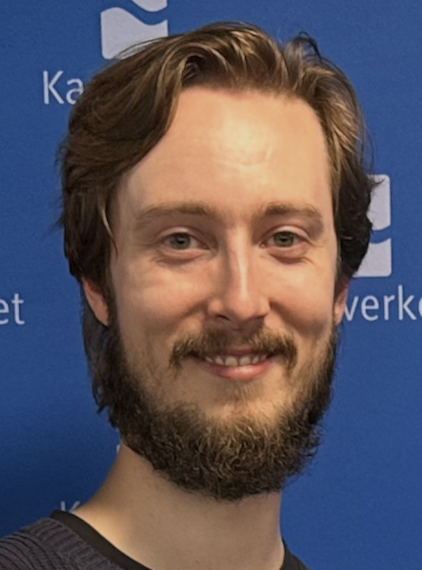

Oskar Moberg Kirkbride
Utvikler & frontend
IT og informasjonssystemer · 3. år · UiA
Liker å utforske nye teknologier og bygge brukervennlige systemer. Brenner for problemløsning og godt samarbeid. Erfaring med fullstackutvikling og en generell interesse for teknologi og innovasjon.
Kompetanse Fullstack, Python, React, TypeScript, AI, C#, UI/UX, systemutvikling, SQL, GIS, systemadministrasjon